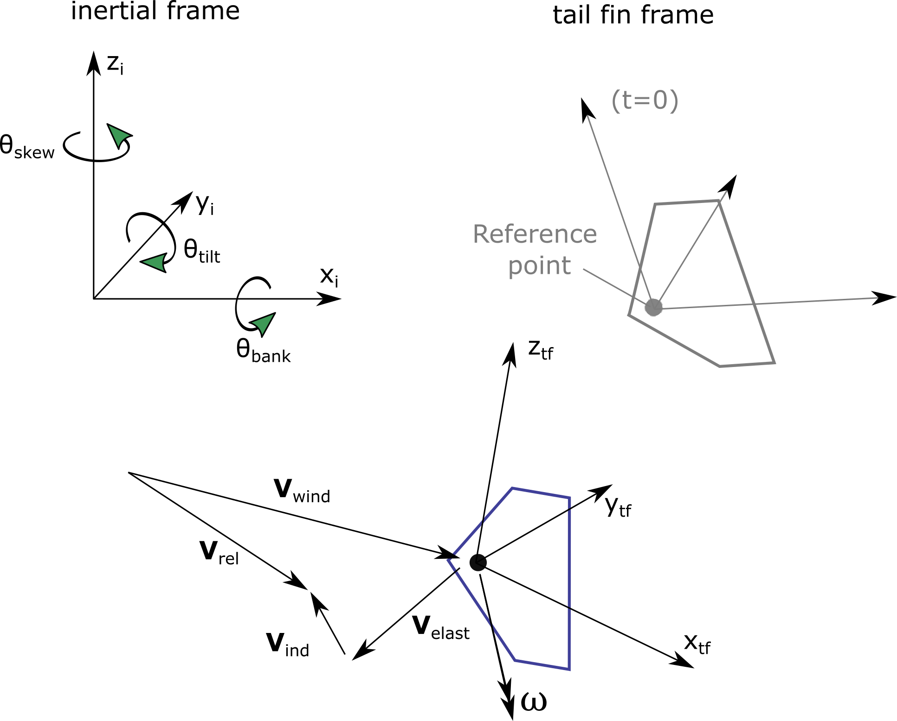
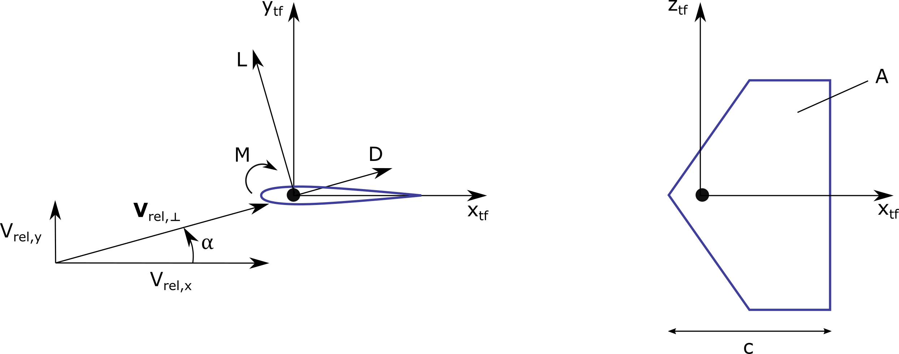

4.3.9. 꼬리지느러미 공기역학 이론
4.3.9.1. 표기법
꼬리 지느러미 공기 역학적 기준점
꼬리지느러미 공기역학적 기준점, \(\boldsymbol{x}_\text{ref}\), 은 꼬리날개에 대한 공기역학적 하중이 계산되는 지점입니다. 구조 솔버는 각 시간 단계에서 기준점의 순간 위치, 속도, 가속도를 계산합니다. 타워 상단에 대한 기준점의 초기 위치는 사용자 입력입니다. 일반적인 선택은 핀의 앞쪽 가장자리/정점 또는 받음각이 0인 압력 중심에 가까운 지점입니다. 다른 공기역학적 입력(예: 공기역학적 모멘트 계수)은 기준점 선택과 일치해야 합니다.
꼬리 지느러미 좌표계
관성 및 꼬리 지느러미 좌표계는 다음과 같습니다. 그림 4.10. 관성 좌표계에서 꼬리 지느러미 좌표계로의 변환 행렬은 다음과 같습니다. \(\boldsymbol{R}_\text{tf,i}\).


그림 4.10 꼬리날개 공기역학에 사용되는 좌표계 및 속도 벡터
참조 방향(구조가 편향되지 않은 경우) 변환 행렬은 다음과 같습니다.
수직 핀이 있는 일반적인 응용 분야의 경우 세 각도는 0입니다.
속도
다음 속도 벡터(전역 좌표의 3D 벡터)가 정의됩니다(참조: 그림 4.10):
\(\boldsymbol{V}_\text{wind}\): 기준점에서의 방해받지 않는 풍속 벡터
\(\boldsymbol{V}_\text{dist}\): 기준점에서의 교란 풍속 벡터(교란 바람은 흐름에 대한 타워의 영향을 포함합니다). AeroDyn에는 내부 계산 방법이 있습니다. \(\boldsymbol{V}_\text{dist}\) ~에서 \(\boldsymbol{V}_\text{wind}\).
\(\boldsymbol{V}_\text{elast}\): 기준점에서의 구조적 병진 속도 벡터
\(\boldsymbol{V}_\text{ind}\): 기준점 후류로부터 유도된 속도(현재로서는 0으로 가정)
\(\boldsymbol{\omega}\): 핀의 구조적 회전 속도
모든 속도(제외 \(\boldsymbol{V}_\text{ind}\) 및 \(\boldsymbol{V}_\text{dist}\) AeroDyn에 의해 내부적으로 계산된 값)은 공기 역학 솔버에 대한 입력으로 제공됩니다. 익형이 받는 상대풍은 다음과 같이 주어진다.
공격 각도
공격 각도는 다음과 같이 정의됩니다. \(x_\text{tf}-y_\text{tf}\) 그림과 같이 꼬리 지느러미 좌표계의 평면 그림 4.11.


그림 4.11 꼬리날개 익형 좌표계 및 x-y 평면에서의 받음각 정의
우리는 쓴다 \(V_{\text{rel},\perp}\) 투영 \(\boldsymbol{V}_\text{rel}\) 이 비행기에서. 공격 각도는 이 벡터의 구성 요소에 의해 제공됩니다.
이 구현에서는 함수 atan2 공격 각도를 계산하는 데 사용됩니다.
잔뜩
무차원 계수를 알고 있는 경우에는 다음과 같이 투영할 수 있습니다. \(x_\text{tf}-y_\text{tf}\) 다음과 같이 비행기:
따라서 하중은 다음과 같이 지정됩니다.
꼬리날개 좌표계에 하중이 알려지면 다음과 같이 관성계로 전달됩니다.
유도 속도
기준점에서 후류로부터 유도된 속도는 상대풍에 영향을 미쳐 꼬리 지느러미의 공격 각도에 영향을 미칩니다. 이 유도 속도를 계산하기 위해 다양한 모델이 구현됩니다. 첫 번째 근사치로서 이 속도는 0으로 설정될 수 있습니다(입력에 해당). TFinIndMod=0):
로터 평균 유도 속도도 추정치로 사용할 수 있습니다(TFinIndMod=1). 이는 모든 블레이드와 공기역학적 노드에 걸쳐 유도된 평균 속도로 계산됩니다.
어디 \(\boldsymbol{V}_{\text{ind},\text{blade}}[i_b, i_r]\) 블레이드에 대해 유도된 속도 벡터입니다. \(i_b\) 그리고 방사형 노드에서 \(i_r\).
보다 발전된 모델은 후류 경계 외부에 있을 때 유도 속도를 0으로 설정하거나 타워 그림자와 같은 후류 모델을 포함할 수 있습니다. 해당 옵션은 아직 사용할 수 없습니다.
4.3.9.2. 극좌표 기반 모델
Polar 기반 모델에서는 사용자가 공기역학적 계수를 제공합니다. \(C_l, C_d, C_m\), 표로 작성된 데이터로서 공격 각도의 기능. 공기역학적 모멘트는 기준점에서 제공되는 것으로 가정됩니다. 일반적인 관행은 극좌표 데이터에 대해 받음각이 0인 압력 중심을 사용하는 것이므로 사용자는 이러한 지점을 핀의 기준점으로 선택하기를 원할 수 있습니다. 표로 작성된 데이터는 다음과 같이 제공된 에어포일 목록의 일부로 제공됩니다. AFNames AeroDyn 입력 파일에서. 사용자는 인덱스만 표시하면 됩니다. TFinAFIndex 목록 내에서 AFNames 꼬리 지느러미에 사용할 극성을 나타냅니다.
4.3.9.3. 불안정한 날씬한 몸매 모델
꼬리 지느러미의 비정상 공기 역학은 비정상 슬렌더 바디 이론(Unsteady Slender Body Theory)을 기반으로 모델링되었습니다. 이론은 높은 요각 효과를 포함하도록 확장되었습니다. [ad-HWS23]. 구현을 단순화하기 위해 꼬리 지느러미의 암 길이가 현보다 훨씬 길고 특성 시간(현/풍속)이 작다고 가정합니다.
꼬리 지느러미에 대한 수직력은 세 가지 기여(잠재적 양력, 와류 양력, 항력)의 합으로 설명할 수 있으며 분리 함수에 따라 가중치가 부여됩니다. \(x_i\) 처럼:
여기서 \(\rho\) 공기의 밀도이고, \(A_{tf}\) 꼬리지느러미 부분이고, \(K_p\) 잠재적인 양력 계수이고 \(K_v\) 는 와류 양력 계수이고, \(C_{Dc}\) 항력 계수입니다. OpenFAST의 부호 연결은 다음에서 사용된 것과 약간 다릅니다. [ad-HWS23]. 이는 방정식에 반영됩니다. (4.9).
\(x_i\) 다음과 같이 준안정 근사법을 사용하여 계산된 분리 함수입니다.
여기서 \(\sigma_i\) 분리 기능의 붕괴를 특징짓는 경험적 상수입니다. \(\gamma_{tf}\) 는 자유 기류 바람에 대한 꼬리 지느러미의 요 각도입니다(\(V_{\text{wind}}\)), \(\alpha^*_i\) 는 분리 함수의 특성 각도입니다. \(x_i\) 0과 1 사이의 값을 가지며 꼬리 지느러미의 수직력에 대한 잠재적 양력, 와류 양력 및 항력의 기여를 활성화하거나 비활성화하는 데 사용됩니다.
수직력은 사용자가 정의한 꼬리 날개의 기준점에 작용하는 것으로 가정하고 그에 따라 수직력의 모멘트를 계산합니다.